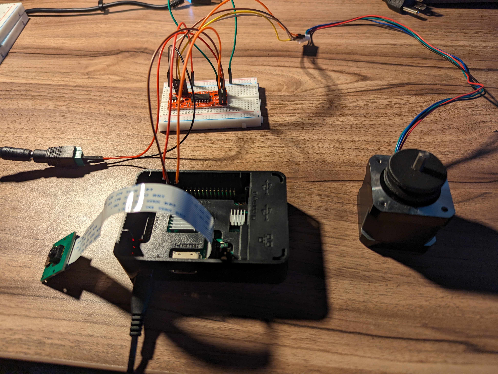
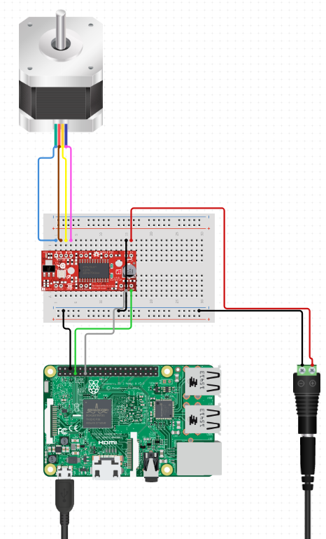
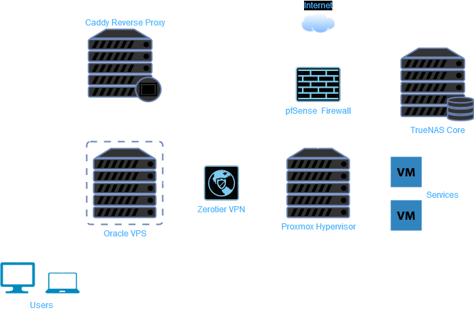
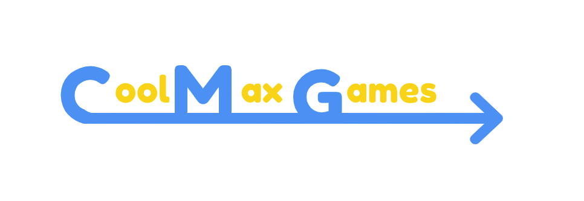

<!DOCTYPE html>
<html lang="en">

<head>
    <meta charset="UTF-8">
    <title>Travis Jankowski</title>
    <meta name="viewport" content="width=device-width, initial-scale=1">
    <link rel="stylesheet" href="styles/bootstrap.min.css">
    <link rel="stylesheet" href="styles/index.css">
    <script src="scripts/apps.js"></script>
    <script src="https://kit.fontawesome.com/09f41a9f51.js" crossorigin="anonymous"></script>

</html>

<body>
    <!-- NavBar with start menu and widgets -->
    <nav class="navbar navbar-expand-lg navbar-dark bg-dark">
        <a class="navbar-brand" href="index.html">Travis Jankowski</a>
        <button class="navbar-toggler" type="button" data-toggle="collapse" data-target="#navbarNavAltMarkup"
            aria-controls="navbarNavAltMarkup" aria-expanded="false" aria-label="Toggle navigation">
            <span class="navbar-toggler-icon"></span>
        </button>
        <!-- NavBar links -->
        <div class="collapse navbar-collapse" id="navbarNavAltMarkup">
            <div class="navbar-nav navbar-right">
                <!-- About link -->
                <a class="nav-item nav-link" href="about.html">About</a>
                <!-- GitHub link -->
                <a class="nav-item nav-link" href="https://github.com/travisj33304" target="_blank"><i
                        class="fab fa-github"></i></a>
                <!-- LinkedIn link -->
                <a class="nav-item nav-link" href="https://linkedin.com/in/travis-jankowski" target="_blank"><i
                        class="fab fa-linkedin"></i></a>
                <!-- Discord link -->
                <a class="nav-item nav-link" href="https://discord.com/users/hexzcracker" target="_blank"><i
                        class="fab fa-discord"></i></a>
            </div>
        </div>
    </nav>
    <!-- Main content -->
    <h2 class="content">Featured Projects</h2>
    <div class="grid-container">
        <!-- Project 1 -->
        <div class="grid-item project">
            <figure>
                
                <div class="project-overlay">
                    <button data-target="door-description" onclick="showDescription(this)"
                        class="btn btn-info">Description</button> <br>
                    <button onclick="location.href='https://github.com/TravisJ33304/door-opener'"
                        class="btn btn-info">GitHub
                        Repo</button>
                </div>
                <figcaption>Autonomous Door Opener</figcaption>
            </figure>
        </div>
        <div id="door-description" class="description-background" onclick="hideDescription(event, 'door-description')">
            <div class="description">
                <button onclick="hideDescription(event, 'door-description')" class="btn btn-primary">Close</button>
                <h3>Autonomous Door Opener</h3>
                <p>Autonomous door opener using a Raspberry Pi 3b, camera, and a stepper motor.</p>
                <p>
                    The goal of this project was to make a device that will watch the outside of my door and
                    use a deep learning model to determine if the person at the door is authorized to enter.
                    After an authorized person is detected, the stepper motor will open the door.
                </p>
                <p>The first step of the project was getting the hardware set up and working.</p>
                <p>
                    I chose to use a Raspberry Pi as the main controller because I already had it
                    and it can run the camera, deep learning model, and stepper motor. The camera
                    I used was an official Raspberry Pi camera module because it is small and can
                    connect to the Pi easily. The motor I used was a bipolar stepper motor that
                    was harvested from a broken 3d printer. I purchased an EasyDriver stepper motor
                    driver to control the motor. Other components such as power supplies and
                    jumper wires were also used. To get the hardware working, I had to connect the
                    camera and motor to the Pi. A diagram of the motor wiring can be found below.
                </p>
                
                <p><strong>Diagram generated by <a href="https://circuito.io">Circuito.io</a></strong></p>
                <p>
                    Important things to note about the diagram: <br> Seperate power supplies were used
                    for the Pi and the motor. The motor power supply has the positive lead connected to
                    the motor driver power and the ground is connected to the motor driver ground as well
                    as the Pi ground. The motor driver STEP and DIR pins are connected to the Pi GPIO pins
                    to control the motor. Lastly, the A and B motor leads are connected to the motor driver.
                    After the motor driver is fully wired, the motor can be tested using a simple Python
                    script included in the github repository.
                </p>
                <p>
                    After the hardware is set up, the software can be completed. My main aspiration
                    for this project was to get the deep learning model working. An Important
                    aspect to consider for this project was the hardware limitations of the Pi.
                    With no hardware acceleration and only 1GB of RAM, the model would have to be
                    very lightweight. I chose to use the MobileNet model as a base model because
                    it can fit in the Pi's memory and it is fast. After downloading the model,
                    I implemented transfer learning with my own custom dataset of authorized
                    people. The dataset is compiled from images I have taken of myself. The
                    dataset is small consisting of around 100 images. Another label used for
                    training was the "unauthorized" label. This label was created to capture
                    anything that is not me. After training, the model reports about 90% testing
                    accuracy.
                </p>
                <p>
                    Once a trained model has been saved, then the main application can be completed.
                    I created a class called MotorDriver that uses the RPi.GPIO library to control
                    the motor. The class has methods to open and close the door. Another class called
                    ImageClassifier takes a model path and a MotorDriver object as arguments. This
                    class is responsible for loading the model weights and making predictions. After
                    the model is loaded a loop is started which takes a picture from the camera and
                    makes a prediction using the model. If the prediction is "authorized" then the
                    MotorDriver object is called to open the door. The loop continues until the program
                    is stopped.
                </p>
            </div>
        </div>
        <!-- Project 2 -->
        <div class="grid-item project">
            <figure>
                
                <div class="project-overlay">
                    <button data-target="homelab-description" onclick="showDescription(this)"
                        class="btn btn-info">Description</button>
                </div>
                <figcaption>Homelab</figcaption>
            </figure>
        </div>
        <div id="homelab-description" class="description-background"
            onclick="hideDescription(event, 'homelab-description')">
            <div class="description">
                <button onclick="hideDescription(event, 'homelab-description')" class="btn btn-primary">Close</button>
                <h3>Homelab</h3>
                <h5>Background</h5>
                <p>
                    My homelab is a collection of servers and networking equipment that I use to learn
                    about networking and server administration. The lab is built on a budget and is
                    constantly changing. The lab is used to host websites, game servers, and other
                    services. I started the lab by installing Ubuntu on my dads old desktop computer.
                    Since then the lab has grown to serve myself, my family, and my friends.
                </p>
                <h5>Network Diagram</h2>
                    
                    <p>Diagram created using <a href="https://diagrams.net">diagrams.net</a></p>
                    <p>
                        This diagram provides an overview of my network. First is the pfSense firewall which controls
                        access to the internet. pfSense is a powerful open-source firewall based on FreeBSD OS that can
                        be run on most consumer hardware. The firewall is connected to a switch which connects all the
                        devices in my network. The next appliance is the TrueNAS Core server which provides network
                        storage and backups on a redundant ZFS pool. TrueNAS Core is an open-source network-attached
                        storage (NAS) operating system based on FreeBSD. Currently the array has 24TB of raw storage
                        capacity. Offsite backups are made to prevent data loss. The real star of the lab is the Proxmox
                        VE host. Proxmox VE is an open-source virtualization management platform based on Debian Linux.
                        All of my services are hosted on virtual machines and containers on this host. Since I want the
                        services to be accessible from outside the local network, I have the host connected to zerotier
                        VPN. Zerotier provides a secure way to remotely access devices on the network. This allows me to
                        create a secure tunnel to a cloud server hosted by Oracle. The Oracle server acts as a reverse
                        proxy which securely routes requests from the internet to the respective services on my local
                        host. This allows me to point my domain name to my servies and avoid exposing my local IP
                        address. The reverse proxy also provides many benefits like load balancing and SSL termination.
                        Since the reverse proxy is hosted by Oracle, I get the benefit of their security and DDOS
                        protection as well.
                    </p>
            </div>
        </div>
        <!-- Project 3 -->
        <div class="grid-item project">
            <figure>
                
                <div class="project-overlay">
                    <button data-target="paintball-description" onclick="showDescription(this)"
                        class="btn btn-info">Description</button> <br>
                    <button onclick="location.href='https://github.com/TravisJ33304/paintball-game'"
                        class="btn btn-info">GitHub
                        Repo</button>
                </div>
                <figcaption>Paintball Game</figcaption>
            </figure>
        </div>
        <div id="paintball-description" class="description-background"
            onclick="hideDescription(event, 'paintball-description')">
            <div class="description">
                <button onclick="hideDescription(event, 'paintball-description')" class="btn btn-primary">Close</button>
                <h3>Paintball Game</h3>
                <p>
                    This paintball game was created because I wanted to improve my skills with full stack web
                    development. The game was created using HTML, CSS, and Javascript on the frontend. For the backend I
                    used Node.js. The game is a simple 2D shooter where the player can move around and shoot paintballs
                    at other people on the game. I used Express to create the server and Socket.io to handle the
                    client-server communication. Web sockets was the ideal protocol because it allows for fast
                    bi-directional communication to transmit game data. I learned a lot about networking and backend
                    development while creating this game.
                </p>
            </div>
        </div>
        <!-- Project 4 -->
        <div class="grid-item project">
            <figure>
                
                <div class="project-overlay">
                    <button data-target="cmg-description" onclick="showDescription(this)"
                        class="btn btn-info">Description</button> <br>
                    <button onclick="location.href='https://github.com/madmax1340/Carlos'" class="btn btn-info">GitHub
                        Repo</button>
                </div>
                <figcaption class="center-caption">Cool Max Games</figcaption>
            </figure>
        </div>
        <div id="cmg-description" class="description-background" onclick="hideDescription(event, 'cmg-description')">
            <div class="description">
                <button onclick="hideDescription(event, 'cmg-description')" class="btn btn-primary">Close</button>
                <h3>Cool Max Games</h3>
                <p>Work in progress...</p>
            </div>
        </div>
    </div>
</body>